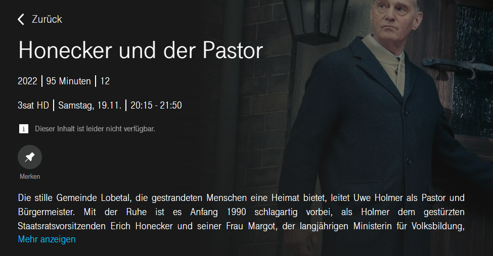
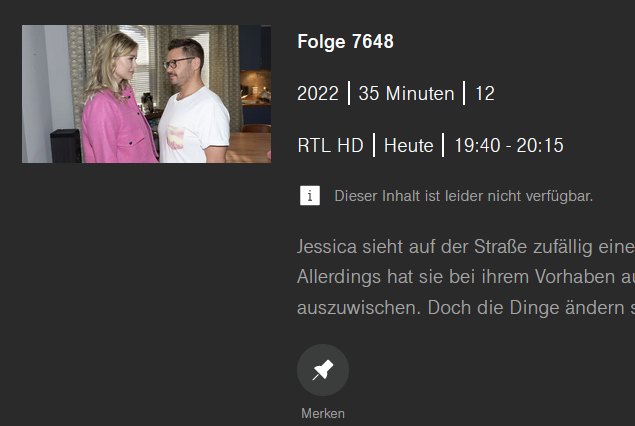
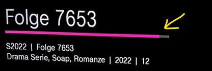

Hallo zusammen,
sollte dir beim TV Guide auffallen, dass eine Info nicht stimmt und der betreffende Inhalt erst künftig abgespielt wird, dann teile uns das gerne hier mit.
Erforderliche Infos:
1. Datum, Uhrzeit, TV Sender
2. Name des Titels, ggf. Screenshots
Sofern möglich, geben wir dies zur Korrektur weiter.
Danke & viele Grüße JD.
Wie so oft stimmt die Beschriftung bei Serien nicht.
ZDF - Bloodlands - die Goliath-Morde, Staffel 1, Ep1 - Teil 1, 1.30 - 3.20 h, 4.10.2022 - richtig
Bei der zweiten Folge im Anschluss daran steht:
Staffel 1, Ep 3 - Teil 2, 3.20 - 5.10 h, 4.10.2022 - falsch
Es handelt sich natürlich um Ep2!
LG
Eva
Wie kann man bei Serienaufnahmen einzelne Episoden löschen?
vor 20 Stunden schrieb Bauxerl:Wie kann man bei Serienaufnahmen einzelne Episoden löschen?
Schau bitte einmal hier , ob du dazu eine Antwort findest.
LG JD.
Ich möchte Episoden von Serienaufnahmenü löschen und diesen Punkt finde ich nicht!
Hallo @Bauxerl , am besten meldest du dich beim Technikteam unter 0676 200 7777 und fragst nach. Im persönlichen Kontakt und wenn bekannt ist, welche Box du nutzt, kann sicher am besten geholfen werden. LG Karo
Am 9/22/2022 um 08:44 schrieb Jonathan Dorian:Hallo zusammen,
sollte dir beim TV Guide auffallen, dass eine Info nicht stimmt und der betreffende Inhalt erst künftig abgespielt wird, dann teile uns das gerne hier mit.
Erforderliche Infos:
1. Datum, Uhrzeit, TV Sender
2. Name des Titels, ggf. Screenshots
Sofern möglich, geben wir dies zur Korrektur weiter.
1. 19:40 - 20:15, RTL HD Serienaufnahme
2. Gute Zeiten, schlechte Zeiten....5min vom Anfang und vom Ende fehlen jeden Tag!
vor 21 Stunden schrieb Geri00:
1. 19:40 - 20:15, RTL HD Serienaufnahme
2. Gute Zeiten, schlechte Zeiten....5min vom Anfang und vom Ende fehlen jeden Tag!
Welche TV Box nutzt du?
LG JD.
Die neueste Magenta TV-Box mit der SW-Version C3.2.2_20221019 - die Box hängt via Ethernet Kabel am Magenta-Modem
Die Konsequenz aus diesen unvollständigen Aufnahmen ist nun Folgendes: will ich diese unvollständige Aufnahme löschen, befindet sich diese weiterhin unter "Meine Inhalte" unter "Weiterschauen". Der Fortschrittsbalken unterhalb des Bildes zeigt an, dass die Sendung nicht vollständig angesehen wurde. Unvollständig ist zwar richtig, aber nur weil das System sie nicht vollständig aufgezeichnet und abgespielt hat! Wähle ich nun eine dieser unvollständig angesehenen Aufnahmen aus, gibt es aber keine Option zum Weitersehen. Es kann nur "Aufnehmen, Merken, Ausstrahlungen, Staffeln" ausgewählt werden. Wähle ich das Play-Symbol links von den Bildern an, wird die chronologisch letzte Aufnahme angezeigt. Wähle ich diese aus, kann diese ebenfalls nicht weitergesehen werden. Hier kann man nur die Optionen "Merken und Staffeln" auswählen. Wie werde ich diese unvollständig angesehenen nun wieder Aufnahmen los? Irgendwann werden sich unter "Weiterschauen" Dutzende Aufnahmen befinden, speziell bei Aufnahmen von täglich laufenden Serien..;-)
Ich kann auch auf Auto, Moto, Sport UDH über die Box nichts aufnehmen, obwohl das eigentlich möglich sein sollte. Dort kommt die Fehlermeldung "Aktualisierung zum Erstellen der Aufnahme fehlgeschlagen". Probiere ich irgendeine Sendung auf Auto, Moto, Sport UDH über Eure Magenta-TV Webseite vom Laptop aus zu programmieren, kommt diese Meldung:
Lg Geri
Bearbeitet von Geri00Hallo @Geri00 ,
setze die TV Box einmal auf Werkseinstellung zurück. Sofern möglich, wähle auch aus, dass alle Aufnahmen gelöscht werden sollen. Prüfe dann, ob du weiterhin dieses Probleme mit den Aufnahmen hast. Gib dann hier Bescheid.
LG JD.
Hallo Jonathan,
bevor ich zurücksetze, hab ich das Verhalten noch mit den GZSZ-Aufnahmen von MO+DI einer anderen Box verglichen, auf die ich Zugriff habe. Auf beiden beginnen die Folgen mit dem musikalischen Intro, der kurze Rückblick auf die letzte Sendung fehlt auf beiden Boxen. Auf beiden fehlt das Ende der Sendung, dh. die Aufnahmen sind auf beiden Boxen identisch. Wieviel vom Ende fehlt kann ich schwer sagen, ich vermute 1-2 min. Aufgezeichnet wurden lt. Anzeige 35:01 min(19:40:-20:15). Lt. Euren FAQs sollte der Zeitpuffer vor und nach einer Aufnahme 30 Sekunden vor bzw. 7 Minuten nach der Sendung sein. 7 Minuten danach stimmt in dem konkreten Fall definitiv nicht!
Dasselbe passiert übrigens auch, wenn ich mir die Aufnahme auf
https://tv.magenta.at
ansehe. Ein Reset der Box wohl nichts nützen, wenn dort die Aufnahme ebenfalls unvollständig ist, oder?
Lg Geri
vor 14 Stunden schrieb Geri00:Hallo Jonathan,
bevor ich zurücksetze, hab ich das Verhalten noch mit den GZSZ-Aufnahmen von MO+DI einer anderen Box verglichen, auf die ich Zugriff habe. Auf beiden beginnen die Folgen mit dem musikalischen Intro, der kurze Rückblick auf die letzte Sendung fehlt auf beiden Boxen. Auf beiden fehlt das Ende der Sendung, dh. die Aufnahmen sind auf beiden Boxen identisch. Wieviel vom Ende fehlt kann ich schwer sagen, ich vermute 1-2 min. Aufgezeichnet wurden lt. Anzeige 35:01 min(19:40:-20:15). Lt. Euren FAQs sollte der Zeitpuffer vor und nach einer Aufnahme 30 Sekunden vor bzw. 7 Minuten nach der Sendung sein. 7 Minuten danach stimmt in dem konkreten Fall definitiv nicht!
Dasselbe passiert übrigens auch, wenn ich mir die Aufnahme auf https://tv.magenta.at ansehe. Ein Reset der Box wohl nichts nützen, wenn dort die Aufnahme ebenfalls unvollständig ist, oder?
Lg Geri
Alles klar. Ich habe das mal zur internen Prüfung weitergleitet.
LG JD.
Auch interessant. Ich habe diese Sendung am SA aufgenommen, beim Abspielen der Aufnahme kommt der Fehler 11. Nachdem man auf 3 SAT eigentlich 7 Tage Replay hat, sollte man sich die Sendung über Replay ansehen können(ist natürlich aktiviert!). Leider ein Irrglaube...geht weder via die Box noch über die Webapp am Laptop. Was hat's da? Kann das wer von Euch abspielen?
Bearbeitet von Geri00
@Geri00 ,
kannst du andere Sendungen auf 3sat HD normal via Replay wiedergeben? Womöglich ist nur dieser Replay Inhalt aus technischen Gründen nicht abrufbar. Dass kann auch für eine Aufnahme gelten. Ich konnte den Inhalt auch nicht wiedergeben :-/.

LG JD.
Am 22.9.2022 um 08:44 schrieb Jonathan Dorian:Hallo zusammen,
sollte dir beim TV Guide auffallen, dass eine Info nicht stimmt und der betreffende Inhalt erst künftig abgespielt wird, dann teile uns das gerne hier mit.
Erforderliche Infos:
1. Datum, Uhrzeit, TV Sender
2. Name des Titels, ggf. Screenshots
Sofern möglich, geben wir dies zur Korrektur weiter.
Danke & viele Grüße JD.
Auf SAT ist seit gestern, 22.11. von 10 Uhr vormittags bis 23.11. 10 Uhr vormittags die Anzeige "Programm wird angezeigt" im TV-Guide. Es ist unmöglich mit der Replay-Funktion Sendungen im gesamten Zeitraum abzuspielen. Die Box hab ich bereits neu gestartet, ohne Erfolg. Bitte um Korrektur, ich möchte eine Sendung vom 22.11. schauen.
@Marie_H: kann ich bestätigen, Replay im genannten Zeitraum geht auch über den Browser am Laptop nicht!
@Jonathan: dürfte dasselbe Phänomen wie bei dem von mir oben erwähnten Film auf 3 Sat HD sein, den ich mir ansehen wollte. Und ja, den Film, der unmittelbar danach auf 3 Sat gelaufen ist, konnte ich mir als Aufnahme ansehen!
Ich möchte einfach eine Sendung von gestern Abend sehen, geht das nun irgendwie, oder nicht? Ich hoffe, das wird repariert! Wie kann es sein, dass man 24 Stunden kein SAT mit Replay schauen kann????
Ein verständlicher Wunsch, denn dafür zahlst Du schliesslich auch! Mir geht es genauso...
vor 23 Stunden schrieb Jonathan Dorian:@Geri00 ,
kannst du andere Sendungen auf 3sat HD normal via Replay wiedergeben? Womöglich ist nur dieser Replay Inhalt aus technischen Gründen nicht abrufbar. Dass kann auch für eine Aufnahme gelten. Ich konnte den Inhalt auch nicht wiedergeben :-/.
LG JD.
@Dorian
bei meiner Mutter, die den Magenta TV HD Recorder hat, kann man diesen Film übrigens problemlos via Replay ansehen. Dh. wenn der Magenta TV HD Recorder und die Magenta TV Box dieselbe Datenquelle verwenden, kann das Problem nicht dort liegen...
@Dorian RTL GZSZ 23.11 19:40 -> beim Abspielen der Aufnahme kommt Fehler 11. Der Fehler 11 kommt auf der Box als auch in der App am iPhone
passiert das nur bei dieser Aufnahme oder auch bei anderen? Starte mal dein Modem und die TV Box neu und teste es nochmals.
LG JD.
Ich habe keine Aufnahme gemacht, ich wollte einfach nur mit der Replayfunktionen auf SAT eine Sendung schauen. Das Problem war nur auf diesem Sender. Box hab ich schon neu gestartet, ohne Erfolg. Morgen ruf ich bei der Hotline an.
vor 12 Stunden schrieb Jonathan Dorian:
passiert das nur bei dieser Aufnahme oder auch bei anderen? Starte mal dein Modem und die TV Box neu und teste es nochmals.
LG JD.
Box rebootet, Modem rebootet, beim Abspielen der Aufnahme vom MI 23.11 19:40 kommt trotzdem sofort wieder Fehler 11. Will ich mir die Folge von heute DO 24.11 19:40 via Replay ansehen, sehe ich überhaupt nur die Buttons "Merken" und "Staffeln" aber keine Möglichkeit mir diese Folge anzusehen!!! Versuche ich dasselbe über den PC im Browser, sehe ich nur "Dieser Inhalt ist nicht verfügbar"
Entschuldige, aber funktioniert da überhaupt irgendwas??? Ich würde Magenta ja gerne meine Zeit für das Testen und Dokumentieren der vielen Fehler zur Verfügung stellen, allerdings müsste ich Euch dafür eine Honorarnote ausstellen!
Eine persönliche Frage: verwenden die Mitarbeiter von Magenta diese Box eigentlich auch privat zu Hause? Kaum vorstellbar, daß die vielen Probleme nur Euren zahlenden Kunden aufallen. Keine SW ist fehlerfrei, aber das toppt bis jetzt alles, was ich in meiner beruflichen Laufbahn bis jetzt gesehen habe...

@Geri00 ,
viele Mitarbeiter nutzen die TV Box auch privat. Wichtig ist halt, dass die TV Box immer die aktuellste SW drauf hat. Damit werden die meisten Fehler ausgemerzt. Aktuellste Version ist Version C3.2.2_20221019 (stand 10.11.2022).
LG JD.
Hallo Dorian,
den SW-Stand hab ich natürlich auch. Aber DIESES Problem kann nicht Box-bezogen sein, denn auch auf
https://tv.magenta.at
und in der iOS-App kommt bei der Aufnahme vom MI der Fehler 11 und wenn ich mir die Folge vom DO via Replay ansehen will, dann steht dort "Dieser Inhalt ist leider nicht verfügbar.". Dh. nicht nur die Boxen haben ein Problem, sondern offenbar auch Euer Backend!
Bringt mich das irgendwie weiter, wenn ich bei jeder nicht funktionierenden Aufnahme oder Replay bei Eurer Hotline anrufe? Da hätte ich dann vermutlich eine neue Tagesbeschäftigung ;-)
Lg Geri
vor 3 Stunden schrieb Geri00:Hallo Dorian,
den SW-Stand hab ich natürlich auch. Aber DIESES Problem kann nicht Box-bezogen sein, denn auch auf https://tv.magenta.at und in der iOS-App kommt bei der Aufnahme vom MI der Fehler 11 und wenn ich mir die Folge vom DO via Replay ansehen will, dann steht dort "Dieser Inhalt ist leider nicht verfügbar.". Dh. nicht nur die Boxen haben ein Problem, sondern offenbar auch Euer Backend!
Bringt mich das irgendwie weiter, wenn ich bei jeder nicht funktionierenden Aufnahme oder Replay bei Eurer Hotline anrufe? Da hätte ich dann vermutlich eine neue Tagesbeschäftigung ;-)
Lg Geri
Wegen fehlerhaften Replayinhalten an der Serviceline anzurufen, wird vermutlich nur vereinzelt zum Erfolg führen. Bitte einfach weiter hier posten. Ich gebe das weiter und mache stetig auf diesen Thread aufmerksam. Der Fehlecode 11 wird aktuell intensiv untersucht. Weitere Infos liegen mir aber nicht vor. Bitte aber nicht böse sein, wenn mal eine Aufnahme oder ein Replayinhalt nicht zum Ansehen geht oder nicht "repariert" wird. LG JD.
Hallo zusammen,
sollte dir beim TV Guide auffallen, dass eine Info nicht stimmt und der betreffende Inhalt erst künftig abgespielt wird, dann teile uns das gerne hier mit.
Erforderliche Infos:
1. Datum, Uhrzeit, TV Sender
2. Name des Titels, ggf. Screenshots
Sofern möglich, geben wir dies zur Korrektur weiter.
Danke & viele Grüße JD.
@Dorian
Aufnahme SAT1 Emotions - Versailles - Staffel 3 Epsode 6 - MI 23.11 01:50 - 02:40 -> Wiedergabe fehlgeschlagen Fehler 11
Die unmittelbar davor aufgenommene Epsode 5 am MI 23.11 00:55 - 01-50 funktioniert interessanterweise!
vor 22 Stunden schrieb Jonathan Dorian:Wegen fehlerhaften Replayinhalten an der Serviceline anzurufen, wird vermutlich nur vereinzelt zum Erfolg führen. Bitte einfach weiter hier posten. Ich gebe das weiter und mache stetig auf diesen Thread aufmerksam. Der Fehlecode 11 wird aktuell intensiv untersucht. Weitere Infos liegen mir aber nicht vor. Bitte aber nicht böse sein, wenn mal eine Aufnahme oder ein Replayinhalt nicht zum Ansehen geht oder nicht "repariert" wird. LG JD.
Dass mal ein Replayinhalt nicht funktioniert, ist auch ärgerlich, aber das waren 24 Stunden?!!! Im TV-Guide steht 24 Stunden nur "Programm wird angesagt". Ist das mittlerweile repariert??
@Dorian
VOX - Goodby Deutschland - MO 14.11 20:15 - 23:15 -> ENDE FEHLT!!!
Meine Lebensgefährtin hat sich diese Sendung am 14.11 live angesehen, das Ende dann aber spontan aufgenommen, da sie schlafen gegangen ist. Im Zuge des heutigen Ansehens hat sie leider feststellen müssen, daß offenbar die letzten Minuten in der Aufnahme gefehlt haben. Ihre Worte zum Fehlen des Endes darf ich hier aus Jugendschutzgründen nicht wiedergeben. Sie war sehr auf jeden Fall sehr wütend auf Magenta....
Am 26.11.2022 um 13:29 schrieb Marie_H:Dass mal ein Replayinhalt nicht funktioniert, ist auch ärgerlich, aber das waren 24 Stunden?!!! Im TV-Guide steht 24 Stunden nur "Programm wird angesagt". Ist das mittlerweile repariert??
"Programm wird angesagt" - das steht üblicherweise nur dort, wenn nicht alle Daten im TV Guide geladen wurden. Starte bitte einmal dein TV Box neu - nimm diese dazu für 3-5 Minuten vom Strom und schau dann, ob das immer noch dort steht. LG JD.
Am 11/13/2022 um 11:02 schrieb Geri00:
1. 19:40 - 20:15, RTL HD Serienaufnahme
2. Gute Zeiten, schlechte Zeiten....5min vom Anfang und vom Ende fehlen jeden Tag!
@ Dorian was gibt's dazu Neues? Anfang und Ende dieser Serie fehlen immer noch!
vor 2 Stunden schrieb Geri00:
@ Dorian was gibt's dazu Neues? Anfang und Ende dieser Serie fehlen immer noch!
Dazu habe ich noch keine Rückmeldung bekommen.
LG JD.
@Jonathan Dorian
interessant ist auch, daß man einen Fortschrittsbalken unter "Folge xyz" ganz oben sieht, wenn man so eine vor dem echten Ende der Sendung beendete Folge nochmals auswählt(dort wo "Auf RTL anschauen" bzw. "Aufnahmen verwalten" steht). Dieser Fortschrittsbalken ist ca. zu 95% gefüllt, obwohl das Abspielen der Aufnahme vor dem echten Ende der Sendung beendet wurde und der Fortschrittsbalken eigentlich auf 100% stehen müsste. Dh. das System erkennt dann doch irgendwie selbst auch, daß ein Stück vom Ende fehlt....

Jetzt hab ich diese Folge gelöscht und sie befindet sich weiterhin unter "Weiterschauen" und lässt sich nicht mehr entfernen(mit einigen anderen "Leichen", die sich ebenfalls nicht mehr aus "Weiterschauen" entfernen lassen.
Das dürfte generell irgendwie ein Problem bei Serien sein, denn "Versailles" S3F6 hängt dort ebenfalls und lässt sich nicht mehr entfernen!!!
Bearbeitet von Geri00Hallo,
Bei der Heute Show im ZDF am Freitag ist im EPG die Dauer mit 30 Minuten angegeben (z.B. Fr. 17. März 22:00-22:30). Die Sendung dauert aber lt. ZDF Programm 33-37 Minuten Es fehlt daher IMMER das Ende.
LG
Beim Sender "Comedy Central Austria" wird 24h am Tag das falsche Programm angzeigt. Es läuft permanent etwas anderes als im TV-Guide angezeigt wird.
Hier Beweisbild - angeglich läuft Bob's Burger aber tatsächlich läuft American Dad
Am 18.9.2023 um 15:55 schrieb AlBundyFan:Beim Sender "Comedy Central Austria" wird 24h am Tag das falsche Programm angzeigt.
Ich habe das soeben intern zur Prüfung weitergeleitet.
LG JD.
Am 24.11.2022 um 19:15 schrieb Marie_H:Ich habe keine Aufnahme gemacht, ich wollte einfach nur mit der Replayfunktionen auf SAT eine Sendung schauen. Das Problem war nur auf diesem Sender. Box hab ich schon neu gestartet, ohne Erfolg. Morgen ruf ich bei der Hotline an.
Am 22.9.2022 um 08:44 schrieb Jonathan Dorian:Hallo zusammen,
sollte dir beim TV Guide auffallen, dass eine Info nicht stimmt und der betreffende Inhalt erst künftig abgespielt wird, dann teile uns das gerne hier mit.
Erforderliche Infos:
1. Datum, Uhrzeit, TV Sender
2. Name des Titels, ggf. Screenshots
Sofern möglich, geben wir dies zur Korrektur weiter.
Danke & viele Grüße JD.
Falsches Zitat ausgewählt, kanns nicht löschen, egal
Hab das Thema nur gerade zufällig entdeckt, als ich in der Warteschlange bei eurer Hotline war.
Meine Erfahrungen bzgl. falschem TV Guide beziehen sich auf Comedy Central, habs in letzter Zeit nicht beobachtet, aber vor einigen Monaten wars noch so, und vor Jahren genauso, euer Vorgänger hat sich immer rausgeredet und gemeint, dass der Sender die falschen Daten schickt und deshalb im TV Guide falsch angezeigt wird.
Also wenn ich mal auf Southpark oder Malcom mittendrin geklickt habe, lief meistens noch das Programm vorher oder nachher, die Zeiten wurden bei euch im Guide noch nie korrekt angezeigt.
Und am Wochenende, speziell am Freitag hab ich danach gesucht, wurde nirgends angezeigt, dass das Formel 1 Qualifying auf ORF 1 läuft, hab dass dann nur durch Zufall live entdeckt, dass es gerade läuft (irgendwann um 23 oder 24 Uhr am Samstag). Im Vorhinein wurde vom Guide definitiv nicht angezeigt, dass das Qualifying läuft, es wurde irgendein anderes Programm angezeigt (weiß nicht mehr genau welches, glaub es war eine lusitge Show, "Was gibts neues" oder so was)
Hi @ibkcj , danke für dein Feedback. Wir geben dieses an unsere Kolleg:innen weiter. Falls dir aktuell eine falsche Info beim TV-Guide auffallen sollte, gib uns bitte Bescheid (und vergiss dabei bitte nicht die folgenden Informationen: 1. Datum, Uhrzeit, TV Sender /2. Name des Titels, ggf. Screenshots). Vielen Dank + LG Doris
{kind=link}
{kind=link}
{kind=link}
{kind=link}